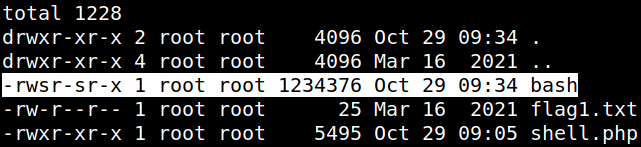
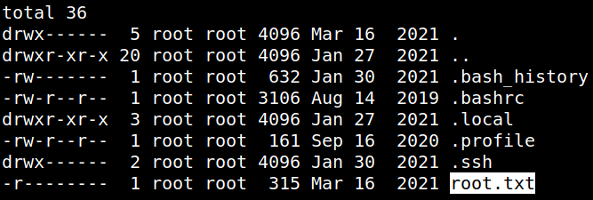
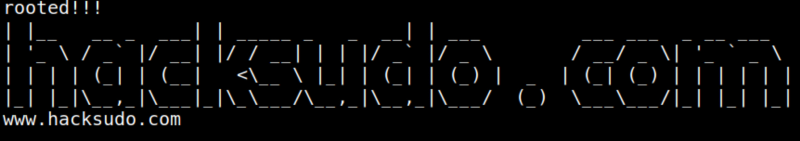

5. Privilege Escalation (Second flag)
1. On your “reverse shell” list the permissions of the “/bin/bash” file.
Output 
It has “root" permissions.
2. Run the ‘bash" file as “root”.
The
bash manual says:
Invoked with unequal effective and real uid/gids
If Bash is started with the effective user (group) id not equal to the real user (group) id, and the
-p option is not supplied, no startup files are read, shell functions are not inherited from the environment, the SHELLOPTS, BASHOPTS, CDPATH, and GLOBIGNORE variables, if they appear in the environment, are ignored, and the effective user id is set to the real user id. If the
-p option is supplied at invocation, the startup behavior is the same, but the effective user id is not reset.
3. Go to the “root” directory and list the files.
Output 
4. Show up the flag.
Output 